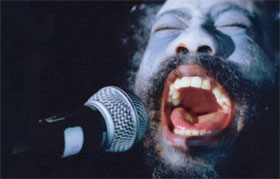

A Spell to Ward Off the Darkness

Ben Rivers, Ben Russell – Frankreich / Deutschland / Estland 2013 – 98 Min.
B+K+S: Ben Rivers, Ben Russell – T: Nicolas Becker, Philippe Ciompi, Gérard Lamps – M: Veldo Tormis, Queequeg, Robert AA Lowe – P: Rouge international
Digital – English
A SPELL follows an unnamed character through three seemingly disparate moments in his life. With little explanation, we join him in the midst of a 15-person collective on a small Estonian island; in isolation in the majestic wilderness of Northern Finland; and during a concert as the singer and guitarist of a black met al band in Norway.
Marked by loneliness, ecstatic beauty and an optimism of the darkest sort, A SPELL is a radical proposition for the existence of utopia in the present.
Starring musician Robert AA Lowe (best known for his intense live performances under the name LICHENS) in the lead role, A SPELL lies somewhere between fiction and non-fiction – it is at once a document of experience and an experience itself, an inquiry into transcendence that sees the cinema as a site for transformation. (Rouge international)
Sunday 12/10 10.30 p.m. Werkstattkino
Ben Rivers, geb. 1972 in Somerset. Studium an der Fine Art at Falmouth School of Art. Mitbegründer und Kurator der Brighton Cinematheque von 1996 bis 2006. Seine Filme werden auf zahlreichen Ausstellungen und Filmfestivals gezeigt. Zusammen mit Ben Russell tourte er 2008 in Neuseeland und Australia mit der Film-Performance "We Can Not Exist In This World Alone". Ben Rivers lebt und arbeitet in London. Rivers war 2011 Artist in Focus beim 6. UNDERDOX.
Filme (Auswahl): This Is My Land 2006 – Ah, Liberty! 2008 (6. UX) – A World Rattled of Habit 2009 – I Know Where I'm Going 2009 (6. UX) – Slow Action 2010 (6. UX)
Ben Russell, geb. 1976. Er studierte Kunst und Semiotik an der Brown University sowie Film und neue Medien am Art Institute of Chicago. Er arbeitet als Fotograf, Kurator und Experimentalfilmschaffender. Ben Russell lebt in Chicago.
Filme (Auswahl): The Ataraxians, Extra Terrestrial 2004 – Trypps #1, The Red and the Blue Gods, The Twenty-One Lives of Billy the Kid 2005 – Trypps #2, Michoacan: La Muerte / El Traidor 2006 – Peace Noise, Trypps #3 2007 (UX 05) – Trypps #4, Tjúba Tén / The Wet Season 2008 – Let each one go where he may 2009 (UX 05) – Trypps #7 (Badlands) 2010 (UX 06)